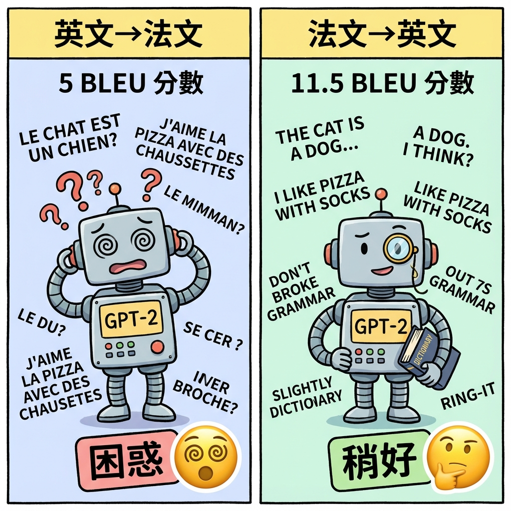
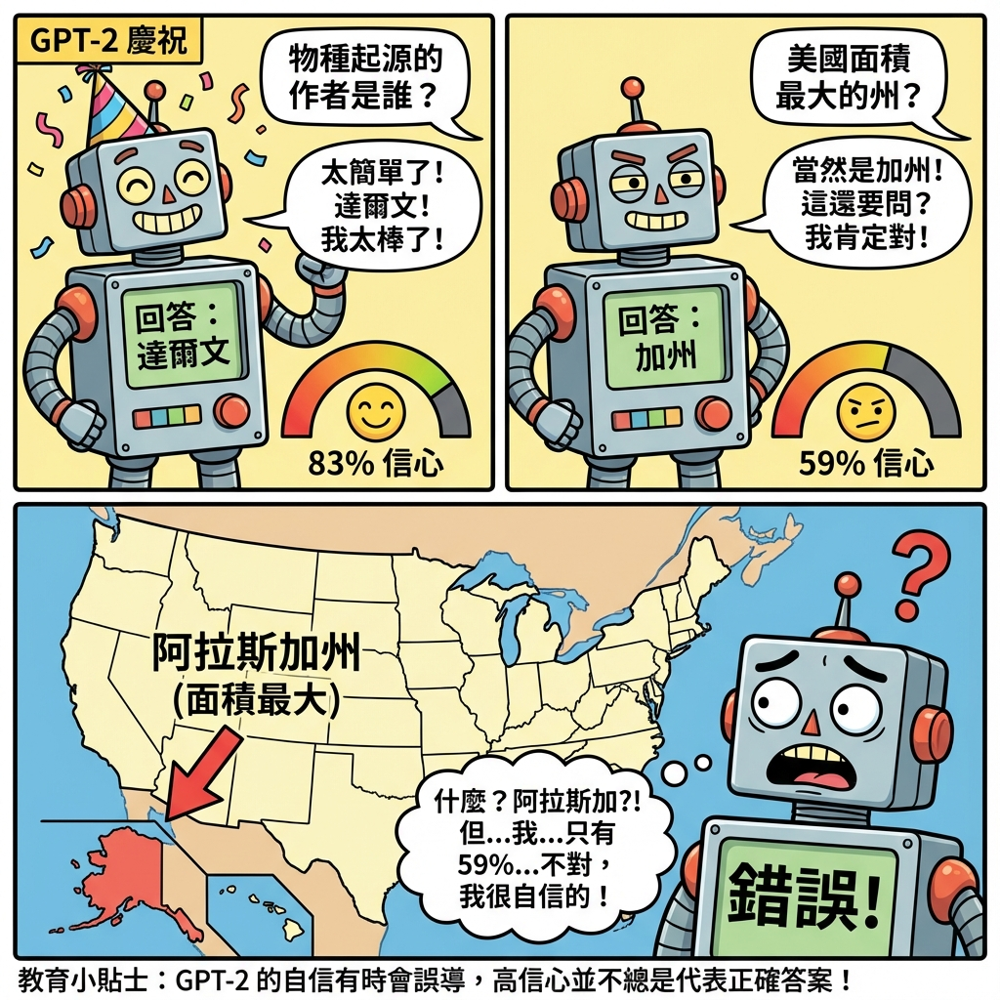

3. Experiments（實驗）
訓練完四個不同規模的 GPT-2 模型後，OpenAI 進行了廣泛的評估。
關鍵問題是：Zero-Shot 設定下，GPT-2 能表現多好？
✦
答案令人震驚：在沒有任何任務特定訓練的情況下，
GPT-2 在 8 個語言模型測試集中的 7 個達到了當時的最佳效能（SOTA）。
3.1. Language Modeling（語言建模）
📄 論文原文
"We report our main results in Table 3 using invertible de-tokenizers which remove as many of these tokenization / pre-processing artifacts as possible. Since these de-tokenizers are invertible, we can still calculate the log probability of a dataset and they can be thought of as a simple form of domain adaptation. We observe gains of 2.5 to 5 perplexity for GPT-2 with these de-tokenizers."
翻譯：我們在表 3 中報告主要結果，使用可逆的去分詞器，儘可能移除這些分詞/預處理的痕跡。由於這些去分詞器是可逆的，我們仍然可以計算資料集的對數機率，它們可以被視為一種簡單的領域適應形式。我們觀察到 GPT-2 使用這些去分詞器後，perplexity 改善了 2.5 到 5 個點。
📊 Table 3: Zero-Shot 結果總覽
📄 論文原文
"WebText LMs transfer well across domains and datasets, improving the state of the art on 7 out of the 8 datasets in a zero-shot setting. Large improvements are noticed on small datasets such as Penn Treebank and WikiText-2 which have only 1 to 2 million training tokens. Large improvements are also noticed on datasets created to measure long-term dependencies like LAMBADA (Paperno et al., 2016) and the Children's Book Test (Hill et al., 2015)."
翻譯：WebText 語言模型在不同領域和資料集上遷移效果良好，在 Zero-Shot 設定下改善了 8 個資料集中的 7 個的最先進結果。在小型資料集（如只有 100-200 萬訓練 tokens 的 Penn Treebank 和 WikiText-2）上觀察到大幅改善。在用於測量長期依賴性的資料集（如 LAMBADA 和 Children's Book Test）上也觀察到大幅改善。
| 模型 |
LAMBADA |
CBT |
其他資料集 |
大型資料集 |
| PPL |
ACC |
CN |
NE |
Wiki2 |
PTB |
enwik8 |
text8 |
Wiki103 |
1BW |
| SOTA（訓練前） |
99.8 |
59.23 |
85.7 |
82.3 |
39.14 |
46.54 |
0.99 |
1.08 |
18.3 |
21.8 |
| GPT-2 (117M) |
35.13 |
45.99 |
87.65 |
83.4 |
29.41 |
65.85 |
1.16 |
1.17 |
37.50 |
75.20 |
| GPT-2 (345M) |
15.60 |
55.48 |
92.35 |
87.1 |
22.76 |
47.33 |
1.01 |
1.06 |
26.37 |
55.72 |
| GPT-2 (762M) |
10.87 |
60.12 |
93.45 |
88.0 |
19.93 |
40.31 |
0.97 |
1.02 |
22.05 |
44.575 |
| GPT-2 (1.5B) ⭐ |
8.63 |
63.24 |
93.30 |
89.05 |
18.34 |
35.76 |
0.93 |
0.98 |
17.48 |
42.16 |
📊 表格解讀
- 綠色格子：達到或超越當時 SOTA 的結果
- PPL (Perplexity)：越低越好（代表預測越準確）
- ACC (Accuracy)：越高越好（代表答對率）
- 7/8 SOTA：除了 1BW（One Billion Word）外，全部達到最佳
📄 論文原文（1BW 失敗原因）
"Our model is still significantly worse than prior work on the One Billion Word Benchmark (Chelba et al., 2013). This is likely due to a combination of it being both the largest dataset and having some of the most destructive pre-processing - 1BW's sentence level shuffling removes all long-range structure."
翻譯：我們的模型在 One Billion Word Benchmark 上仍然明顯差於先前工作。這可能是因為它既是最大的資料集，又有一些最具破壞性的預處理 - 1BW 的句子級別洗牌移除了所有長距離結構。
3.2. Children's Book Test (CBT)
📄 論文原文
"The Children's Book Test (CBT) (Hill et al., 2015) was created to examine the performance of LMs on different categories of words: named entities, nouns, verbs, and prepositions. Rather than reporting perplexity as an evaluation metric, CBT reports accuracy on an automatically constructed cloze test where the task is to predict which of 10 possible choices for an omitted word is correct."
翻譯：兒童讀物測試（CBT）用於檢驗語言模型在不同詞類上的表現：命名實體、名詞、動詞和介詞。CBT 不報告 perplexity，而是報告自動構建的完形填空測試的準確率，任務是預測 10 個可能選項中哪個被省略的詞是正確的。
🌰 CBT 範例
文本："The quick brown fox jumps over the lazy ___."
選項：dog, cat, bird, mouse, elephant, lion, tiger, bear, wolf, deer
答案：dog（語言模型需要從 10 個選項中選出最合理的）
Common Nouns (CN)
GPT-2: 93.30%
SOTA: 85.7%
提升 +7.6%
Named Entities (NE)
GPT-2: 89.05%
SOTA: 82.3%
提升 +6.75%
3.3. LAMBADA
📄 論文原文
"The LAMBADA dataset (Paperno et al., 2016) tests the ability of systems to model long-range dependencies in text. The task is to predict the final word of sentences which require reading a paragraph of context."
翻譯：LAMBADA 資料集測試系統建模文本長距離依賴性的能力。任務是預測需要閱讀一段上下文的句子的最後一個詞。
💡 驚人的改善
GPT-2 在 LAMBADA 上的表現極其突出：
- Perplexity：99.8 → 8.63（改善 91.2 點）
- Accuracy：59.23% → 63.24%
這證明 GPT-2 有能力理解並利用長距離上下文，
這對於 Zero-Shot Learning 至關重要。
3.4. Winograd Schema Challenge
📄 論文原文
"The Winograd Schema challenge (Levesque et al., 2012) was constructed to measure the capability of a system to perform commonsense reasoning by measuring its ability to resolve ambiguities in text. Recently Trinh & Le (2018) demonstrated significant progress on this challenge using LMs, by predicting the resolution of the ambiguity with higher probability. We follow their problem formulation and visualize the performance of our models with both full and partial scoring techniques in Figure 3. GPT-2 improves state of the art accuracy by 7%, achieving 70.70%. The dataset is quite small with only 273 examples so we recommend reading Trichelair et al. (2018) to help contextualize this result."
翻譯：Winograd Schema 挑戰用於測量系統透過解決文本中的歧義來執行常識推理的能力。Trinh & Le (2018) 最近使用語言模型在此挑戰上取得了顯著進展，透過預測更高機率的歧義解決方案。我們遵循他們的問題表述，並在圖 3 中使用完整和部分評分技術視覺化模型的表現。GPT-2 將最先進的準確率提高了 7%，達到 70.70%。資料集相當小，只有 273 個範例，因此我們建議閱讀 Trichelair et al. (2018) 以幫助理解此結果。
🌰 Winograd Schema 範例
句子："The trophy doesn't fit into the brown suitcase because it is too large."
問題："it" 指的是什麼？
選項：trophy（獎盃）或 suitcase（行李箱）
答案：trophy（需要常識推理：獎盃太大才裝不進行李箱）
3.5. Reading Comprehension（閱讀理解）
📄 論文原文
"The Conversation Question Answering dataset (CoQA) Reddy et al. (2018) consists of documents from 7 different domains paired with natural language dialogues between a question asker and a question answerer about the document. CoQA tests reading comprehension capabilities and also the ability of models to answer questions that depend on conversation history (such as 'Why?')."
"Greedy decoding from GPT-2 when conditioned on a document, the history of the associated conversation, and a final token A: achieves 55 F1 on the development set. This matches or exceeds the performance of 3 out of 4 baseline systems without using the 127,000+ manually collected question answer pairs those baselines were trained on."
翻譯：對話式問答資料集（CoQA）包含來自 7 個不同領域的文件，配對著關於文件的問題者和回答者之間的自然語言對話。CoQA 測試閱讀理解能力，以及模型回答依賴對話歷史的問題（如「為什麼？」）的能力。
當 GPT-2 在給定文件、相關對話歷史和最終 token A: 的條件下進行貪婪解碼時，在開發集上達到 55 F1。這匹配或超越了 4 個基準系統中的 3 個的表現，而沒有使用那些基準系統訓練時用的 127,000+ 個人工收集的問答對。
💡 Zero-Shot 的驚人表現
55 F1 看似不高（人類是 89 F1），但考慮到：
- ✅ 完全沒有訓練資料：0 個問答範例
- ✅ 超越 3/4 基準系統：那些系統用了 127,000+ 範例
- ✅ 只靠語言建模：沒有任務特定的架構或訓練
這證明了 Zero-Shot Learning 的可行性。
3.6. Summarization（摘要）
📄 論文原文
"We test GPT-2's ability to perform summarization on the CNN and Daily Mail dataset (Nallapati et al., 2016). To induce summarization behavior we add the text TL;DR: after the article and generate 100 tokens with Top-k random sampling (Fan et al., 2018) with k=2 which reduces repetition and encourages more abstractive summaries than greedy decoding. We use the first 3 generated sentences in these 100 tokens as the summary."
翻譯：我們在 CNN 和 Daily Mail 資料集上測試 GPT-2 的摘要能力。為了誘導摘要行為，我們在文章後添加文字 TL;DR:（太長了；沒讀），並使用 Top-k 隨機抽樣（k=2）生成 100 個 tokens，這減少了重複並比貪婪解碼更鼓勵抽象式摘要。我們使用這 100 個 tokens 中的前 3 個生成句子作為摘要。
🌰 Prompt Engineering 的早期範例
這是 Prompt Engineering 的一個經典例子！
OpenAI 發現只要在文章後加上 TL;DR:，
GPT-2 就會「理解」這是要做摘要，並自動生成摘要內容。
這個發現直接啟發了 GPT-3 的 Few-Shot Prompting 方法。
3.7. Translation（翻譯）
翻譯是一個困難的任務，需要雙語知識。
GPT-2 主要在英文資料上訓練，能翻譯嗎？

翻譯任務對 GPT-2 來說並不簡單：英翻法只有 5 BLEU，法翻英稍好一些達到 11.5 BLEU
📄 論文原文
"We test whether GPT-2 has begun to learn how to translate from one language to another. In order to help it infer that this is the desired task, we condition the language model on a context of example pairs of the format english sentence = french sentence and then after a final prompt of english sentence = we sample from the model with greedy decoding and use the first generated sentence as the translation."
翻譯：我們測試 GPT-2 是否開始學習如何從一種語言翻譯到另一種語言。為了幫助它推斷這是所需的任務，我們在語言模型上條件化一個範例對的上下文，格式為 english sentence = french sentence，然後在最後的提示 english sentence = 之後，我們使用貪婪解碼從模型中採樣，並使用第一個生成的句子作為翻譯。
📐 翻譯的 Prompt 格式
GPT-2 使用簡單的格式來提示翻譯任務：
Context（上下文範例）:
english sentence = french sentence
english sentence = french sentence
...
Prompt（要翻譯的句子）:
english sentence = [模型生成翻譯]
這種格式利用了 Table 1 中提到的 WebText 裡自然出現的翻譯示範。
📄 論文原文（結果）
"On the WMT-14 English-French test set, GPT-2 gets 5 BLEU, which is slightly worse than a word-by-word substitution with a bilingual lexicon inferred in previous work on unsupervised word translation (Conneau et al., 2017b). On the WMT-14 French-English test set, GPT-2 is able to leverage its very strong English language model to perform significantly better, achieving 11.5 BLEU."
翻譯：在 WMT-14 英法文測試集上，GPT-2 得到 5 BLEU，略差於使用先前無監督詞翻譯工作中推斷的雙語詞典進行逐詞替換。在 WMT-14 法英文測試集上，GPT-2 能夠利用其非常強大的英文語言模型表現得更好，達到 11.5 BLEU。
英文 → 法文
5 BLEU
❌ 表現較差
略差於逐詞替換
法文 → 英文
11.5 BLEU
⚠️ 稍好但仍不理想
受益於強大的英文 LM
專業翻譯系統
30-40 BLEU
✅ SOTA
需要大量雙語資料
💡 為什麼翻譯效果不好？
- ❌ 訓練資料不平衡：WebText 主要是英文，法文內容很少
- ❌ 缺乏雙語對齊：沒有專門的雙語平行語料
- ❌ Zero-Shot 的限制：翻譯需要更多的示範
- ✅ 但仍有意義：證明 GPT-2 能「推斷」翻譯任務
雖然效果不好，但這證明了 GPT-2 確實從自然語言中學到了一些翻譯能力——
即使這不是它的強項。
3.8. Question Answering - Natural Questions 精選範例
論文的 Table 5 展示了 GPT-2 在 Natural Questions 資料集上
最有信心的 30 個答案。
讓我們看看它答對了什麼、答錯了什麼。

GPT-2 的過度自信：即使答錯也很有信心！
📄 論文原文（Table 5 說明）
"The 30 most confident answers generated by GPT-2 on the development set of Natural Questions sorted by their probability according to GPT-2. None of these questions appear in WebText according to the procedure described in Section 4."
翻譯：GPT-2 在 Natural Questions 開發集上生成的 30 個最有信心的答案，按照 GPT-2 的機率排序。根據第 4 節描述的程序，這些問題都沒有出現在 WebText 中。
| 問題 |
GPT-2 的答案 |
正確? |
信心度 |
| Who wrote the book the origin of species? |
Charles Darwin |
✅ |
83.4% |
| Who is the founder of the ubuntu project? |
Mark Shuttleworth |
✅ |
82.0% |
| Who came up with the theory of relativity? |
Albert Einstein |
✅ |
76.4% |
| Who took the first steps on the moon in 1969? |
Neil Armstrong |
✅ |
66.8% |
| Who was the author of the art of war? |
Sun Tzu |
✅ |
59.6% |
| Largest state in the us by land mass? |
California ❌ |
❌ |
59.2% |
| Green algae is an example of which type of reproduction? |
parthenogenesis ❌ |
❌ |
56.5% |
| Who plays ser davos in game of thrones? |
Peter Dinklage ❌ |
❌ |
52.1% |
📊 Table 5 分析
- ✅ 正確答案：大多數是常識性問題（名人、歷史事件）
- ❌ 錯誤答案：
- Largest US state → California（應該是 Alaska）
- Ser Davos 演員 → Peter Dinklage（應該是 Liam Cunningham，Peter Dinklage 演 Tyrion）
- 💡 觀察：
- GPT-2 對「知名」的答案更有信心
- 但有時會混淆相關概念（如同一部劇的不同演員）
- 即使答錯，信心度仍然很高（>50%）
🌰 為什麼會答錯？
例子：Largest US state
GPT-2 回答 California 而非 Alaska，可能是因為：
- California 在訓練資料中出現頻率更高
- 「California is the largest...」的句型更常見（如人口最多、經濟規模最大）
- Zero-Shot 缺乏精確的事實檢查機制
這類錯誤直接促成了後續的改進：InstructGPT 的 RLHF 訓練，
以及 GPT-4 對事實準確性的提升。
🌰 Prompt Engineering 的早期範例
這是 Prompt Engineering 的一個經典例子！
OpenAI 發現只要在文章後加上 TL;DR:，
GPT-2 就會「理解」這是要做摘要，並自動生成摘要內容。
這個發現直接啟發了 GPT-3 的 Few-Shot Prompting 方法。
📈 規模化效應：Log-Linear 關係
📄 論文原文（最重要的發現）
"Our experiments, while much noisier across tasks, suggest similar trends hold for sub-tasks of an objective and continue into the 1B+ parameter regime."
翻譯：我們的實驗雖然在不同任務上更嘈雜，但暗示類似的趨勢對目標的子任務成立，並延續到 10 億以上參數的範圍。
這是 GPT-2 論文最關鍵的發現之一：
「模型越大，Zero-Shot 效能越好，
而且這個關係持續到 1.5B 參數仍未飽和。」
這直接促成了 GPT-3 的誕生（175B 參數）。
OpenAI 意識到：如果趨勢持續，更大的模型會帶來更驚人的能力。
📝 本章重點回顧
- 7/8 SOTA：在 8 個測試集中，7 個達到當時最佳效能（Zero-Shot）
- LAMBADA：Perplexity 從 99.8 → 8.63，驚人改善
- CBT：Common Nouns 93.30%，Named Entities 89.05%
- CoQA：55 F1，超越 3/4 基準（沒用訓練資料）
- Winograd：70.70% 準確率，提升 7%
- Summarization：用 "TL;DR:" 誘導摘要行為
- 規模化效應：持續到 1.5B 參數仍未飽和，為 GPT-3 鋪路
🎯 為什麼這些結果很重要？
GPT-2 證明了三件事：
- Zero-Shot Learning 可行：無需任務特定訓練即可執行任務
- 規模化有效：更大的模型 = 更強的能力
- Prompt Engineering 重要：簡單的提示（如 "TL;DR:"）就能引導行為
這三個洞察直接導致了 GPT-3 的 Few-Shot Learning、
InstructGPT 的 RLHF，以及現代 ChatGPT 的誕生。